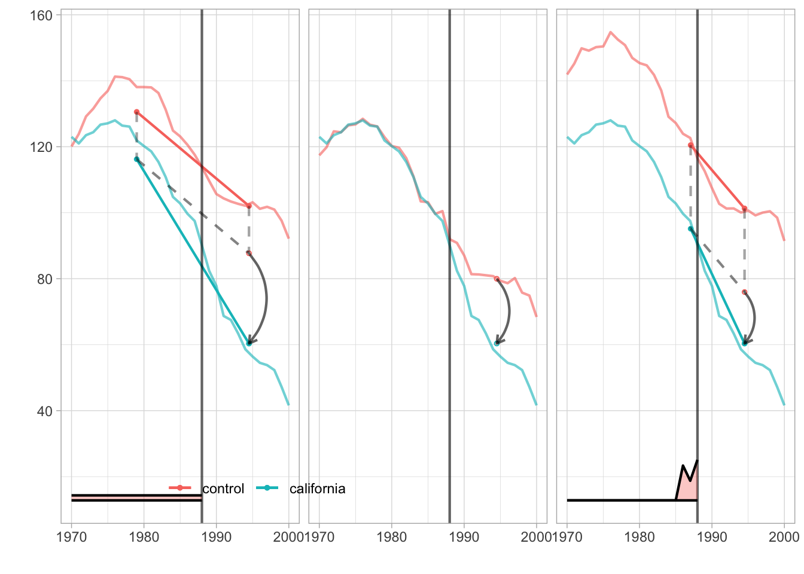

Capítulo 10 Controle Sintético e Estimação Contrafactual
10.1 Motivação
No capítulo 8, vimos que o DiD requer tendências paralelas: na ausência de tratamento, tratados e controles teriam evoluído de forma similar. Mas essa suposição é frequentemente violada — especialmente quando há poucas unidades tratadas (às vezes apenas uma) ou quando confundidores variam no tempo de forma heterogênea entre grupos.
Este capítulo apresenta uma família de métodos que compartilham a mesma lógica: imputar o contrafactual \(Y_{it}(0)\) para as observações tratadas. A diferença entre eles está no modelo que usam para essa imputação e nas restrições que impõem:
- O Controle Sintético (SCM) constrói o contrafactual como combinação convexa de unidades não-tratadas.
- O framework de estimação contrafactual (Liu, Wang & Xu, 2024) generaliza a imputação para três estimadores — FEct, IFEct e MC — com diagnósticos formais.
- O Synthetic DiD (Arkhangelsky et al., 2021) combina pesos de unidade (como SCM) com pesos temporais e efeitos fixos (como DiD).
- O TROP (Athey et al., 2025) combina um modelo de fatores com pesos de unidade e pesos temporais, obtendo tripla robustez.
Mapa do capítulo. As seções 2–3 cobrem o SCM clássico e sua implementação no R. A seção 4 introduz o framework de estimação contrafactual. A seção 5 apresenta os três estimadores (FEct, IFEct, MC) com aplicação empírica. A seção 6 discute diagnósticos. A seção 7 apresenta o Synthetic DiD. A seção 8 introduz o TROP. A seção 9 oferece um guia prático de escolha entre métodos. A seção 10 resume o capítulo.
10.2 Controle Sintético clássico
O método de controle sintético foi originalmente proposto por Abadie e Gardeazabal (2003) para estimar os custos econômicos do conflito no País Basco, e posteriormente formalizado e popularizado por Abadie, Diamond e Hainmueller (2010, 2015). Vamos começar com o exemplo clássico de Abadie, Diamond e Hainmueller (2010). O estado da Califórnia implementou a Proposição 99, uma proibição parcial do uso de cigarros. Nosso estimando é o efeito dessa política sobre as vendas per capita de cigarros:
\[ \tau_t = Y_{CA,t}(1) - Y_{CA,t}(0), \quad \text{para } t > 1988 \]
Como não observamos \(Y_{CA,t}(0)\), precisamos construir uma “Califórnia Sintética” — uma média ponderada dos demais estados que reproduza a trajetória da Califórnia no período pré-tratamento.
| state | year | cigsale | retprice | california | after_treatment |
|---|---|---|---|---|---|
| 1 | 1970 | 89.8 | 39.6 | FALSE | FALSE |
| 1 | 1971 | 95.4 | 42.7 | FALSE | FALSE |
| 1 | 1972 | 101.1 | 42.3 | FALSE | FALSE |
| 1 | 1973 | 102.9 | 42.1 | FALSE | FALSE |
| 1 | 1974 | 108.2 | 43.1 | FALSE | FALSE |
| 1 | 1975 | 111.7 | 46.6 | FALSE | FALSE |

A média simples dos demais estados (linha tracejada) não é um bom contrafactual: os estados diferem em nível e tendência. A ideia do SCM é encontrar pesos que produzam uma combinação dos estados de controle que replique a trajetória pré-tratamento da Califórnia.
10.2.1 Formalização
Suponha que temos dados para \(J+1\) unidades por \(T\) períodos: \(1, 2, \ldots, T_0, T_0+1, \ldots, T\). A primeira unidade (\(j=1\)) é tratada a partir de \(T_0+1\). As demais \(j = 2, \ldots, J+1\) formam o donor pool. Para cada unidade, observamos um vetor de \(k\) preditores \(\mathbf{X}_j\), que pode incluir valores pré-intervenção da variável resposta.
Os dados podem ser organizados em blocos, onde as linhas representam períodos (pré e pós-tratamento) e as colunas representam unidades (controle e tratada):
\[\begin{aligned} D \;=\; \underset{\text{linhas: períodos}}{\underbrace{ \begin{pmatrix} \mathbf{0} & \mathbf{0} \\ \mathbf{0} & \mathbf{1} \end{pmatrix} }} \quad \begin{matrix} \leftarrow \text{pré} \\ \leftarrow \text{pós} \end{matrix} \qquad Y \;=\; \underset{\text{colunas: controle | tratada}}{\underbrace{ \begin{pmatrix} Y_{co, pre}(0) & Y_{tr, pre}(0) \\ Y_{co, post}(0) & Y_{tr, post}(1) \end{pmatrix} }} \end{aligned}\]O estimando é o ATT para os períodos pós-tratamento: \[ \tau_t = \mathbb{E}[Y_{it}(1) \mid D_{it}=1] - \mathbb{E}[Y_{it}(0) \mid D_{it}=1] \]
O contrafactual é estimado como média ponderada do donor pool: \[ \hat{Y}_{tr, t}(0) = \sum_{j \in co} w_j Y_{j,t} \]
com as restrições:
- \(\sum_j w_j = 1\) (combinação convexa)
- \(w_j \geq 0\), \(\forall j\) (pesos não-negativos)
Nota: Generalizações posteriores (Doudchenko & Imbens, 2016) permitem a inclusão de um intercepto \(\mu\) na estimação, isto é, \(\hat{Y}_{tr, t}(0) = \mu + \sum_{j \in co} w_j Y_{j,t}\), e até a remoção da restrição de não-negatividade. Essa extensão conecta o SCM ao SDiD (seção 7), que inclui efeitos fixos de unidade explicitamente.
As restrições de convexidade limitam a extrapolação — o contrafactual é uma interpolação no espaço de pesos do donor pool — mas não a eliminam completamente. Se nenhuma combinação convexa dos controles reproduzir bem os preditores da unidade tratada, pode haver viés residual. A literatura subsequente (Doudchenko & Imbens, 2016; Ben-Michael et al., 2021) argumenta que permitir alguma extrapolação (relaxando a convexidade) pode melhorar o desempenho, o que motiva o SCM aumentado (augmented SCM). Ainda assim, a convexidade oferece uma disciplina importante em relação à regressão linear, que pode extrapolar livremente.
Os pesos são obtidos minimizando a distância entre os preditores da unidade tratada e a combinação ponderada dos controles: \[ \hat{\mathbf{W}}(V) = \arg\min_{\mathbf{W}} (\mathbf{X}_{tr} - \mathbf{X}_{co}\mathbf{W})' V (\mathbf{X}_{tr} - \mathbf{X}_{co}\mathbf{W}) \] onde \(\mathbf{X}\) inclui a variável dependente defasada como preditor, e \(V\) é uma matriz diagonal positiva semidefinida (\(k \times k\)) que atribui importância relativa a cada preditor. A escolha de \(V\) é feita por uma otimização aninhada (nested optimization): no loop externo, \(V\) é escolhida para minimizar o RMSPE (Root Mean Squared Prediction Error) no período pré-tratamento; no loop interno, dado \(V\), os pesos \(\mathbf{W}\) são otimizados. Isso significa que os resultados do SCM dependem da escolha dos preditores incluídos em \(\mathbf{X}\) — tanto a seleção quanto a ponderação dos preditores afetam a solução final.
Por que o SCM funciona? Sob um modelo linear de fatores \(Y_{it}(0) = \delta_t + \theta_t Z_i + \lambda_t \mu_i + \varepsilon_{it}\), onde \(Z_i\) são covariáveis observadas, \(\mu_i\) são fatores não-observados e \(\lambda_t\) são cargas temporais, Abadie, Diamond e Hainmueller (2010, Proposição 1) mostram que, se existem pesos que reproduzem exatamente os preditores pré-tratamento da unidade tratada (isto é, \(\mathbf{X}_{tr} = \mathbf{X}_{co}\mathbf{W}\)), então o viés do SCM desaparece quando \(T_0 \to \infty\). Intuitivamente, ao reproduzir as trajetórias pré-tratamento e as covariáveis observadas, o controle sintético também reproduz os fatores latentes não-observados — que são a fonte de viés na ausência de tendências paralelas.
Risco de sobreajuste. Otimizar o ajuste pré-tratamento pode levar a overfitting, especialmente quando se incluem todos os valores defasados da variável resposta como preditores. Kaul et al. (2022) mostram que incluir todas as defasagens torna os demais preditores irrelevantes para a otimização. A recomendação prática é usar defasagens selecionadas (por exemplo, \(Y_{i,T_0}\), \(Y_{i,T_0/2}\)) e médias de covariáveis, em vez de todos os resultados pré-tratamento. O pesquisador deve justificar a escolha de preditores com base em conhecimento substantivo e verificar a robustez dos resultados a especificações alternativas (Abadie, 2021).
10.3 Implementação do SCM no R
Usamos o pacote tidysynth, que oferece uma interface moderna para o SCM.
| state | year | cigsale | lnincome | beer | age15to24 | retprice |
|---|---|---|---|---|---|---|
| Rhode Island | 1970 | 123.9 | NA | NA | 0.1831579 | 39.3 |
| Tennessee | 1970 | 99.8 | NA | NA | 0.1780438 | 39.9 |
| Indiana | 1970 | 134.6 | NA | NA | 0.1765159 | 30.6 |
| Nevada | 1970 | 189.5 | NA | NA | 0.1615542 | 38.9 |
| Louisiana | 1970 | 115.9 | NA | NA | 0.1851852 | 34.3 |
| Oklahoma | 1970 | 108.4 | NA | NA | 0.1754592 | 38.4 |
smoking_out <-
smoking %>%
synthetic_control(outcome = cigsale,
unit = state,
time = year,
i_unit = "California",
i_time = 1988,
generate_placebos=T
) %>%
generate_predictor(time_window = 1980:1988,
ln_income = mean(lnincome, na.rm = T),
ret_price = mean(retprice, na.rm = T),
youth = mean(age15to24, na.rm = T)) %>%
generate_predictor(time_window = 1984:1988,
beer_sales = mean(beer, na.rm = T)) %>%
generate_predictor(time_window = 1975,
cigsale_1975 = cigsale) %>%
generate_predictor(time_window = 1980,
cigsale_1980 = cigsale) %>%
generate_predictor(time_window = 1988,
cigsale_1988 = cigsale) %>%
generate_weights(optimization_window = 1970:1988,
margin_ipop = .02,sigf_ipop = 7,bound_ipop = 6
) %>%
generate_control()
smoking_out %>% plot_trends(time_window = 1970:2000)
O gráfico mostra que a Califórnia Sintética acompanha bem a trajetória real no período pré-1988, e diverge no período pós — essa divergência é a estimativa do efeito causal.
A quantidade causal de interesse — a diferença entre observado e sintético — pode ser visualizada diretamente:

Os pesos atribuídos a cada estado e a cada variável preditora:

O balanceamento entre a Califórnia real e a sintética nos preditores:
## # A tibble: 7 × 4
## variable California synthetic_California donor_sample
## <chr> <dbl> <dbl> <dbl>
## 1 ln_income 10.1 9.85 9.83
## 2 ret_price 89.4 89.4 87.3
## 3 youth 0.174 0.174 0.173
## 4 beer_sales 24.3 24.2 23.7
## 5 cigsale_1975 127. 127. 137.
## 6 cigsale_1980 120. 120. 138.
## 7 cigsale_1988 90.1 91.4 114.10.3.1 Inferência por placebo
A inferência no SCM é feita por testes placebo. A intuição é a de um teste de permutação: para cada estado do donor pool, fingimos que ele foi tratado e estimamos um SCM. Se o efeito da Califórnia for grande relativo aos placebos, concluímos que é estatisticamente significativo.

O efeito estimado para a Califórnia (linha escura) é claramente maior do que os efeitos placebo (linhas cinzas), sugerindo que a Proposição 99 de fato reduziu o consumo de cigarros.
Para formalizar a inferência, Abadie, Diamond e Hainmueller (2010, seção 4) propõem construir p-valores a partir da distribuição de razões de RMSPE: para cada unidade placebo \(j\), calcula-se a razão entre o RMSPE pós-tratamento e o RMSPE pré-tratamento. Se a razão da unidade tratada for extrema em relação à distribuição dos placebos, o efeito é considerado significativo. Formalmente, o p-valor é a fração de unidades (incluindo a tratada) cuja razão RMSPE é pelo menos tão grande quanto a da unidade tratada. Chernozhukov, Wüthrich e Zhu (2021) desenvolvem um método de inferência conformal para o SCM que fornece p-valores com validade em amostra finita, sem depender de aproximações assintóticas.
Sensibilidade ao donor pool. Os resultados do SCM podem ser sensíveis à composição do donor pool. O pesquisador deve justificar os critérios de inclusão e exclusão de unidades de controle com base em conhecimento substantivo — por exemplo, excluindo estados com políticas antitabaco similares ou com características estruturais muito diferentes (Abadie, 2021). Recomenda-se verificar a robustez das estimativas a variações na composição do donor pool.
10.4 Framework de estimação contrafactual
O SCM clássico é uma ferramenta poderosa para estudos de caso com uma única unidade tratada. Mas e quando temos múltiplas unidades tratadas com tratamento escalonado no tempo? E quando queremos diagnósticos formais sobre a qualidade da estimação?
Liu, Wang e Xu (2024) propõem um framework unificado de estimação contrafactual que generaliza o SCM e o DiD por imputação. A ideia central é a mesma: estimar \(Y_{it}(0)\) para as observações tratadas e calcular o efeito como a diferença entre observado e contrafactual.
10.4.1 Setup
Considere um painel com \(N\) unidades e \(T\) períodos. O indicador de tratamento \(D_{it}\) pode variar por unidade e tempo (tratamento escalonado, e inclusive pode “ligar e desligar”). Particione as observações em dois conjuntos:
- \(\mathcal{C}_0\): observações não-tratadas (\(D_{it} = 0\)), usadas para estimar o modelo
- \(\mathcal{M}\): observações tratadas (\(D_{it} = 1\)), para as quais imputamos o contrafactual
O efeito individual do tratamento é \(\delta_{it} = Y_{it}(1) - Y_{it}(0)\), e o estimando é: \[ ATT = \mathbb{E}[\delta_{it} \mid D_{it} = 1] = \frac{1}{|\mathcal{M}|} \sum_{(i,t) \in \mathcal{M}} \delta_{it} \]
A segunda igualdade vale sob uma interpretação design-based, em que o painel observado é a população de interesse (não uma amostra de uma superpopulação). Nesse caso, a expectativa é sobre a atribuição de tratamento, e a média amostral coincide com o parâmetro populacional.
10.4.2 Estratégia de estimação em quatro passos
- Ajustar o modelo de \(Y_{it}(0)\) usando apenas as observações em \(\mathcal{C}_0\)
- Prever o contrafactual \(\hat{Y}_{it}(0)\) para cada \((i,t) \in \mathcal{M}\)
- Calcular \(\hat{\delta}_{it} = Y_{it} - \hat{Y}_{it}(0)\) para cada observação tratada
- Agregar os efeitos: \(\widehat{ATT} = \frac{1}{|\mathcal{M}|} \sum_{(i,t) \in \mathcal{M}} \hat{\delta}_{it}\)
Essa estratégia evita o problema de pesos negativos do TWFE (capítulo 8): cada observação tratada recebe peso uniforme \(1/|\mathcal{M}|\) na agregação.
10.4.3 Suposições de identificação
O framework requer três suposições (Liu et al., 2024, p. 163):
- Suposição 1 (Forma funcional): \(Y_{it}(0) = h(U_{it}) + \varepsilon_{it}\), onde \(h\) é uma função desconhecida e \(U_{it}\) são fatores latentes.
- Suposição 2 (Exogeneidade estrita): \(\mathbb{E}[\varepsilon_{it} | U_{i1}, \ldots, U_{iT}, D_{i1}, \ldots, D_{iT}] = 0\) — os erros são não-correlacionados com os fatores e o tratamento.
- Suposição 3 (Decomposição de baixo posto): \(h(U_{it})\) pode ser decomposta em componentes de baixa dimensionalidade.
A Suposição 3 é o que diferencia os três estimadores: no caso mais simples, \(h(U_{it}) = \alpha_i + \xi_t\) (efeitos fixos aditivos, como no DiD). No caso mais flexível, \(h(U_{it}) = \alpha_i + \xi_t + \lambda'_i f_t\) (fatores interativos).
10.4.4 Conexão com DiD
O DiD é um caso especial deste framework. Quando \(h(U_{it}) = \alpha_i + \xi_t\) e usamos os dados de controle para estimar esses efeitos fixos e depois imputamos, obtemos o estimador de DiD por imputação de Borusyak, Jaravel e Spiess (2024), que vimos no capítulo 8. O framework de Liu et al. vai além ao permitir modelos mais flexíveis.
10.5 Três estimadores contrafactuais
O framework de Liu et al. (2024) oferece três estimadores, implementados no pacote fect (Fixed Effects Counterfactual Estimators).
10.5.1 FEct: efeitos fixos
O modelo mais simples assume: \[ Y_{it}(0) = X'_{it}\beta + \alpha_i + \xi_t + \varepsilon_{it} \]
Esse é o modelo TWFE — os mesmos efeitos fixos aditivos do DiD. A diferença em relação ao DiD tradicional é a estratégia de estimação: em vez de regredir \(Y\) em \(D\) com efeitos fixos (o que pode gerar pesos negativos com tratamento heterogêneo), o FEct estima \(\alpha_i\), \(\xi_t\) e \(\beta\) usando apenas as observações não-tratadas, e depois imputa o contrafactual para as tratadas.
Isso é equivalente ao estimador de imputação de Borusyak et al. (2024), que discutimos no capítulo 8.
10.5.2 IFEct: fatores interativos
O modelo de fatores interativos adiciona um componente multiplicativo: \[ Y_{it}(0) = X'_{it}\beta + \alpha_i + \xi_t + \lambda'_i f_t + \varepsilon_{it} \]
O termo \(\lambda'_i f_t\) captura confundidores variantes no tempo de forma heterogênea: \(f_t\) é um vetor de \(r\) fatores comuns (que variam no tempo), e \(\lambda_i\) é o vetor de cargas fatoriais (que variam por unidade). Quando \(f_t\) é constante, o componente \(\lambda'_i f_t\) é absorvido pelo efeito fixo de unidade \(\alpha_i\), e o modelo reduz ao caso aditivo (FEct); quando \(\lambda_i\) é constante, o componente é absorvido pelo efeito fixo de tempo \(\xi_t\).
A vantagem em relação ao FEct é que o IFEct relaxa a suposição de tendências paralelas: não exige que todas as unidades sigam a mesma tendência temporal. Basta que as trajetórias sejam explicáveis por um número pequeno de fatores latentes — uma suposição mais fraca e frequentemente mais realista.
O número de fatores \(r\) é escolhido por validação cruzada. Na prática, o pacote fect testa \(r = 0, 1, 2, \ldots, r_{max}\) e escolhe o valor que minimiza o erro de predição nos dados não-tratados.
10.5.3 MC: Matrix Completion
O estimador MC (Athey, Bayati, Doudchenko, Imbens e Khosravi, 2021) trata o problema como completação de matriz. A ideia é que a matriz \(\mathbf{Y}(0)\) de resultados potenciais sem tratamento tem estrutura de baixo posto — pode ser bem aproximada por uma matriz de posto \(r\) pequeno. O modelo é: \[ \mathbf{Y}(0) = \mathbf{X}\beta + \mathbf{L} + \varepsilon \] onde \(\mathbf{L}\) é uma matriz de baixo posto. Em vez de selecionar \(r\) fatores diretamente (como no IFEct), o MC penaliza a norma nuclear \(\|\mathbf{L}\|_*\), que é uma relaxação convexa do posto. Isso faz um “soft impute”: os valores singulares são encolhidos continuamente, em vez de truncados.
A diferença prática entre IFEct e MC é:
- IFEct faz “hard impute”: escolhe \(r\) fatores e descarta o resto
- MC faz “soft impute”: penaliza a norma nuclear, encolhendo todos os valores singulares
Quando a penalização \(\lambda_L \to \infty\) (ou \(r = 0\)), ambos reduzem ao FEct (efeitos fixos aditivos).
10.5.4 Demonstração com dados da Califórnia
Aplicamos os três estimadores aos mesmos dados de cigarros usados no SCM.
library(fect)
library(tidyverse)
data(smoking, package = "tidysynth")
# Preparar dados para fect
df_fect <- smoking %>%
mutate(
D = ifelse(state == "California" & year >= 1989, 1, 0),
unit_id = as.numeric(as.factor(state))
)
# FEct: efeitos fixos (equivalente a DiD por imputação)
out_fe <- fect(cigsale ~ D, data = df_fect,
index = c("state", "year"),
method = "fe",
se = TRUE, nboots = 200,
parallel = FALSE)
cat("FEct - ATT estimado:", round(out_fe$att.avg, 2), "\n")## FEct - ATT estimado: -27.35# IFEct: fatores interativos (r escolhido por CV)
out_ife <- fect(cigsale ~ D, data = df_fect,
index = c("state", "year"),
method = "ife",
r = c(0, 5),
CV = TRUE,
se = TRUE, nboots = 200,
parallel = FALSE)
cat("IFEct - ATT estimado:", round(out_ife$att.avg, 2), "\n")## IFEct - ATT estimado: -24.62## Número de fatores escolhido: 3# MC: Matrix Completion
out_mc <- fect(cigsale ~ D, data = df_fect,
index = c("state", "year"),
method = "mc",
se = TRUE, nboots = 200,
parallel = FALSE)
cat("MC - ATT estimado:", round(out_mc$att.avg, 2), "\n")## MC - ATT estimado: -25.91O gráfico de efeitos dinâmicos (dynamic treatment effects) mostra a evolução do efeito estimado ao longo do tempo, incluindo o período pré-tratamento (que deve ser próximo de zero se o modelo estiver bem especificado):
par(mfrow = c(1, 3))
plot(out_fe, main = "FEct (Efeitos Fixos)", ylab = "Efeito estimado", xlab = "Períodos relativos ao tratamento")
plot(out_ife, main = "IFEct (Fatores Interativos)", ylab = "Efeito estimado", xlab = "Períodos relativos ao tratamento")
plot(out_mc, main = "MC (Matrix Completion)", ylab = "Efeito estimado", xlab = "Períodos relativos ao tratamento")
Os três estimadores devem concordar no sinal e magnitude aproximada do efeito (redução nas vendas de cigarros). Divergências no período pré-tratamento indicam diferenças na qualidade do ajuste — que é exatamente o que os diagnósticos formais da próxima seção avaliam.
10.6 Diagnósticos
Uma vantagem do framework de Liu et al. (2024) é oferecer diagnósticos formais para avaliar a qualidade da estimação contrafactual. Esses diagnósticos vão além da inspeção visual e fornecem testes estatísticos.
10.6.1 Efeitos dinâmicos
O gráfico de efeitos dinâmicos (gap plot) mostra \(\hat{\delta}_{it}\) para cada período relativo ao tratamento. No período pré-tratamento, esses efeitos devem ser próximos de zero — se não forem, o modelo está falhando em reproduzir os dados pré-tratamento e as estimativas pós-tratamento são suspeitas.
Diferentemente do event study tradicional do DiD (capítulo 8), o gráfico do fect não precisa de uma categoria de referência arbitrária: todos os períodos pré-tratamento são informativos.
10.6.2 Placebo test
O teste placebo “esconde” parte dos períodos pré-tratamento e finge que o tratamento começou antes. Formalmente, remove os últimos \(L\) períodos pré-tratamento de \(\mathcal{C}_0\), reestima o modelo, e calcula \(\hat{\delta}_{it}\) para esses períodos “escondidos”. Se o modelo for bem especificado, esses efeitos placebo devem ser zero.
Liu et al. (2024) propõem dois critérios:
- Teste t: a média dos efeitos placebo é significativamente diferente de zero?
- Teste de equivalência (TOST): os efeitos placebo estão dentro de um intervalo de equivalência \([-\Delta, \Delta]\)?
O teste de equivalência é preferível porque um teste t com baixo poder pode falhar em rejeitar (falso conforto), enquanto o TOST requer evidência positiva de que os efeitos são pequenos.
# Placebo test com IFEct (r fixo, sem CV)
out_ife_placebo <- fect(cigsale ~ D, data = df_fect,
index = c("state", "year"),
method = "ife",
r = 2,
se = TRUE, nboots = 200,
parallel = FALSE,
placeboTest = TRUE,
placebo.period = c(-2, 0))
plot(out_ife_placebo, type = "equiv", main = "Teste de Equivalência (IFEct)")
10.6.3 Teste de no-carryover
Em alguns contextos, o tratamento pode ter efeitos residuais: mesmo após o tratamento ser “desligado”, a unidade ainda é afetada. O teste de carryover esconde períodos imediatamente após o tratamento ser removido (se aplicável) e verifica se existem efeitos residuais. Em contextos como o nosso (tratamento absorvente), esse teste não se aplica diretamente, mas é relevante para designs em que o tratamento liga e desliga.
10.7 Synthetic DiD
O Controle Sintético clássico e o framework de estimação contrafactual resolvem o problema de imputação de formas diferentes. Uma terceira abordagem, proposta por Arkhangelsky, Athey, Hirshberg, Imbens e Wager (2021), combina as ideias do SCM e do DiD em um único estimador: o Synthetic DiD (SDiD).
Para entender o SDiD, é útil ver os três estimadores — SC, DiD e SDiD — lado a lado.
O Controle Sintético pode ser reescrito como um problema de mínimos quadrados ponderados: \[ (\hat{\mu}, \hat{\gamma}, \hat{\tau}^{SC}) = \arg\min_{\mu, \gamma, \tau}\ \sum_i \sum_t (y_{it} - \mu - \gamma_t - D_{it}\tau)^2 \hat{w}_i \] Note que não há efeitos fixos de unidade (\(\alpha_i\)) — os pesos \(\hat{w}_i\) “fazem o trabalho” de tornar os controles comparáveis.
O DiD (via TWFE) inclui efeitos fixos mas dá peso igual a todas as unidades: \[ (\hat{\mu}, \hat{\alpha}, \hat{\gamma}, \hat{\tau}^{DiD}) = \arg\min_{\mu, \alpha, \gamma, \tau}\ \sum_i \sum_t (y_{it} - \mu - \alpha_i - \gamma_t - D_{it}\tau)^2 \]
O SDiD combina ambos — efeitos fixos e pesos, tanto para unidades quanto para períodos: \[ (\hat{\mu}, \hat{\alpha}, \hat{\gamma}, \hat{\tau}^{SDiD}) = \arg\min_{\mu, \alpha, \gamma, \tau}\ \sum_i \sum_t (y_{it} - \mu - \alpha_i - \gamma_t - D_{it}\tau)^2 \hat{w}_i \hat{\lambda}_t \]
Os pesos de unidade \(\hat{w}_i\) balanceiam as tendências pré-tratamento: dão mais peso a unidades de controle cuja trajetória é similar à dos tratados. Os pesos temporais \(\hat{\lambda}_t\) balanceiam os períodos: dão mais peso a períodos pré-tratamento cuja estrutura de cross-section é similar ao período pós. Em outras palavras, os pesos reponderam as observações de modo a reduzir o viés sob um modelo de fatores latentes, mesmo quando tendências paralelas globais não são válidas. Arkhangelsky et al. (2021) demonstram a consistência do SDiD sob um modelo de fatores quando as estimativas de pesos convergem adequadamente.
A vantagem do SDiD sobre o DiD é que não exige tendências paralelas globais. A vantagem sobre o SCM é que inclui efeitos fixos de unidade, o que permite lidar com diferenças de nível.
10.7.1 Implementação no R
Vamos aplicar DiD, SC e SDiD aos dados da Califórnia.
library(fixest)
smoking_did <- smoking %>%
mutate(treatment = ifelse(state == "California" & year > 1988, 1, 0))
did <- feols(cigsale ~ treatment | state + year, data = smoking_did)
summary(did)## OLS estimation, Dep. Var.: cigsale
## Observations: 1,209
## Fixed-effects: state: 39, year: 31
## Standard-errors: Clustered (state)
## Estimate Std. Error t value Pr(>|t|)
## treatment -27.3491 2.80238 -9.75925 6.6913e-12 ***
## ---
## Signif. codes: 0 '***' 0.001 '**' 0.01 '*' 0.05 '.' 0.1 ' ' 1
## RMSE: 11.5 Adj. R2: 0.870229
## Within R2: 0.032671O estimador de DiD assume tendências paralelas na média — suposição que pode não ser crível neste contexto, como mostra o event study:
library(did2s)
library(ggfixest)
df <- smoking_did %>%
mutate(event_time = year - 1988,
id = as.integer(as.factor(state))) %>%
group_by(state) %>%
mutate(g = ifelse(state == "California", 1988, 0),
cohort = ifelse(state == "California", 1, 0),
g1 = ifelse(state == "California" & year >= 1980, 1980, 0))
out_es <- event_study(
data = df,
idname = "id",
tname = "year",
gname = "g",
yname = "cigsale",
estimator = "all"
)## Error in create_Atheta_list_for_event_study(eventTime = eventTime, g_list = g_list, :
## There are no comparison cohorts for the given eventTime
Agora comparamos os três estimadores com o pacote synthdid:
library(synthdid)
estimators = list(did=did_estimate,
sc=sc_estimate,
sdid=synthdid_estimate)
df_sdid <- df %>%
dplyr::select(state, year, cigsale, treatment) %>%
mutate(treatment = as.integer(treatment),
year = as.integer(year),
state = as.factor(state)) %>%
as.data.frame()
setup <- panel.matrices(df_sdid)
estimates <- lapply(estimators, function(estimator) { estimator(setup$Y,
setup$N0, setup$T0) } )
standard.errors = mapply(function(estimate, name) {
set.seed(12345)
if(name == 'mc') { mc_placebo_se(setup$Y, setup$N0, setup$T0) }
else { sqrt(vcov(estimate, method='placebo')) }
}, estimates, names(estimators))
# Resultados
data.frame(
Estimador = c("DiD", "SC", "SDiD"),
ATT = round(sapply(estimates, function(x) x[1]), 2),
SE = round(standard.errors, 2)
) %>% kable()| Estimador | ATT | SE | |
|---|---|---|---|
| did | DiD | -27.35 | 17.74 |
| sc | SC | -19.62 | 9.92 |
| sdid | SDiD | -15.60 | 8.37 |
O gráfico a seguir compara visualmente as trajetórias estimadas:
synthdid_plot(estimates[1:3], facet.vertical=FALSE,
control.name='control', treated.name='california',
lambda.comparable=TRUE, se.method = 'none',
trajectory.linetype = 1, line.width=.75, effect.curvature=-.4,
trajectory.alpha=.7, effect.alpha=.7,
diagram.alpha=1, onset.alpha=.7) +
theme(legend.position=c(.26,.07), legend.direction='horizontal',
legend.key=element_blank(), legend.background=element_blank(),
strip.background=element_blank(), strip.text.x = element_blank())
E os pesos de unidade atribuídos por cada estimador:

Note que o DiD atribui peso igual a todos os estados de controle, o SC concentra peso em poucos estados similares à Califórnia, e o SDiD faz algo intermediário.
10.8 TROP: estimador triplamente robusto
Athey, Imbens, Qu e Viviano (2025) propõem o TROP (Triply Robust Panel Estimator), que combina três componentes:
- Um modelo de fatores (outcome model): \(Y_{it}(0) = \mu_i + \lambda'_i f_t + \varepsilon_{it}\)
- Pesos de unidade \(w_i\) (análogo ao SCM)
- Pesos temporais \(\omega_t\) (análogo ao SDiD)
A propriedade central do TROP é a tripla robustez. Para entender essa propriedade, considere que o viés do estimador tem uma estrutura multiplicativa: é proporcional ao produto de três termos de erro de especificação: \[ \text{viés} \propto e_{\text{modelo}} \times e_{\text{pesos de unidade}} \times e_{\text{pesos temporais}} \]
onde \(e_{\text{modelo}}\) é o erro do modelo de fatores, \(e_{\text{pesos de unidade}}\) é o erro dos pesos de unidade, e \(e_{\text{pesos temporais}}\) é o erro dos pesos temporais. Como o viés é um produto desses três termos, basta que qualquer um deles seja zero para que o viés total desapareça. Em outras palavras, o estimador é consistente se qualquer um dos três componentes estiver corretamente especificado — não é necessário que todos estejam corretos simultaneamente.
Isso contrasta com o SDiD, que usa efeitos fixos aditivos + pesos, enquanto o TROP usa um modelo de fatores + pesos. Contudo, é importante notar que quando todos os três componentes estão mal especificados, o viés pode ser arbitrário — a tripla robustez não protege contra falha simultânea de todos os componentes.
Em simulações, Athey et al. (2025) mostram que o TROP supera substancialmente o TWFE e compete com o SDiD e o MC em uma variedade de cenários. A recomendação dos autores é usar simulações calibradas aos dados para escolher entre estimadores — não há estimador que domine em todos os cenários.
Nota: o artigo de Athey et al. (2025) é um preprint que ainda não passou por revisão por pares. Até 2026, não existe pacote R público para o TROP. A menção aqui é teórica e serve para situar o leitor na fronteira da literatura.
10.9 Quando usar cada método: guia prático
A escolha entre os métodos depende do contexto empírico. Eis um guia baseado nas recomendações de Liu et al. (2024, p. 175):
Árvore de decisão:
- Uma única unidade tratada → SCM (seção 2) ou SCM aumentado (Ben-Michael et al., 2021)
- Múltiplas unidades, tendências paralelas plausíveis → DiD/FEct (capítulo 8 e seção 5.1)
- Múltiplas unidades, tendências paralelas duvidosas → IFEct ou MC (seção 5.2–5.3)
- Poucas unidades de controle → SDiD (seção 7) — os pesos ajudam a criar comparabilidade
Checklist prático (adaptado de Liu et al., 2024):
- Visualize o treatment status: quando cada unidade entra no tratamento?
- Visualize a variável resposta: há tendências não-paralelas visíveis?
- Comece com FEct + diagnósticos (placebo test, equivalência)
- Se os diagnósticos falharem → tente IFEct ou MC + diagnósticos
- Se houver carryover → remova os períodos afetados e reestime
- Compare as estimativas entre métodos: se concordarem, há robustez; se divergirem, investigue por quê
A tabela abaixo resume as suposições e características de cada método:
| Método | Modelo para \(Y(0)\) | Relaxa tendências paralelas? | Pesos | Pacote R |
|---|---|---|---|---|
| DiD/TWFE | \(\alpha_i + \lambda_t\) | Não | Iguais | fixest |
| FEct | \(X'\beta + \alpha_i + \xi_t\) | Não (mesma suposição) | Uniformes | fect |
| IFEct | \(X'\beta + \alpha_i + \xi_t + \lambda'_i f_t\) | Sim (fatores) | Uniformes | fect |
| MC | Baixo posto (norma nuclear) | Sim (baixo posto) | Implícitos (norma nuclear) | fect |
| SCM | Combinação convexa | Indiretamente (via pesos) | Convexos | tidysynth |
| SDiD | \(\alpha_i + \lambda_t\) + pesos | Sim (localmente) | Unid. + tempo | synthdid |
| TROP | Fatores + pesos | Sim (tripla robustez) | Unid. + tempo | — |
A relação entre esses métodos envolve duas dimensões distintas. A primeira é a flexibilidade do modelo: DiD/FEct assumem efeitos aditivos, enquanto IFEct e MC permitem estrutura de fatores (baixo posto), relaxando tendências paralelas. A segunda é a robustez à má especificação: o SDiD usa o mesmo modelo aditivo do FEct, mas adiciona pesos de unidade e temporais que o tornam mais robusto quando tendências paralelas globais falham — é mais robusto, não necessariamente mais flexível. Da mesma forma, o TROP não relaxa suposições além do modelo de fatores; sua contribuição é a tripla robustez via estrutura multiplicativa do viés, que o protege contra erros em qualquer um dos três componentes. MC e IFEct operam sob suposições de baixo posto similares, mas diferem computacionalmente (soft vs. hard impute). Em todos os casos, métodos com menos suposições ou mais robustez tendem a pagar um custo em variância: a escolha envolve o trade-off viés-variância usual.
10.10 Resumo
Neste capítulo, apresentamos uma família de métodos para estimação de efeitos causais em dados de painel, unificados pela ideia de imputação do contrafactual \(Y_{it}(0)\):
- O SCM constrói o contrafactual como combinação convexa de unidades não-tratadas — ideal para estudos de caso com uma unidade tratada.
- O framework de estimação contrafactual (Liu et al., 2024) generaliza a imputação para três estimadores (FEct, IFEct, MC) com diagnósticos formais.
- O SDiD combina pesos de unidade e temporais com efeitos fixos, criando tendências paralelas localmente.
- O TROP (Athey et al., 2025) oferece tripla robustez combinando modelo de fatores com pesos de unidade e pesos temporais.
A conexão com o capítulo 8 (DiD) é direta: o FEct é equivalente ao DiD por imputação de Borusyak et al. (2024), e o DiD tradicional é um caso especial do framework quando \(h(U_{it}) = \alpha_i + \xi_t\). A conexão com o capítulo 9 (TSCS) também é clara: o IFEct estende os modelos de fatores interativos de Xu (2017) e Gobillon e Magnac (2016) para o contexto de inferência causal.
No próximo capítulo, veremos como Large Language Models (LLMs) podem ser usados como ferramentas para pesquisa em ciências sociais.
10.11 Referências
Abadie, A. (2021). Using synthetic controls: Feasibility, data requirements, and methodological aspects. Journal of Economic Literature, 59(2), 391–425.
Abadie, A., & Gardeazabal, J. (2003). The economic costs of conflict: A case study of the Basque Country. American Economic Review, 93(1), 113–132.
Abadie, A., Diamond, A., & Hainmueller, J. (2010). Synthetic control methods for comparative case studies: Estimating the effect of California’s tobacco control program. Journal of the American Statistical Association, 105(490), 493–505.
Abadie, A., Diamond, A., & Hainmueller, J. (2015). Comparative politics and the synthetic control method. American Journal of Political Science, 59(2), 495–510.
Arkhangelsky, D., Athey, S., Hirshberg, D. A., Imbens, G. W., & Wager, S. (2021). Synthetic difference-in-differences. American Economic Review, 111(12), 4088–4118.
Arkhangelsky, D., & Imbens, G. (2024). Causal models for longitudinal and panel data: A survey. The Econometrics Journal, 27(3), C1–C61.
Athey, S., Bayati, M., Doudchenko, N., Imbens, G., & Khosravi, K. (2021). Matrix completion methods for causal panel data models. Journal of the American Statistical Association, 116(536), 1716–1730.
Athey, S., Imbens, G., Qu, Z., & Viviano, D. (2025). Triply robust estimation of causal effects with missing data in panel studies. Preprint.
Ben-Michael, E., Feller, A., & Rothstein, J. (2021). The augmented synthetic control method. Journal of the American Statistical Association, 116(536), 1789–1803.
Borusyak, K., Jaravel, X., & Spiess, J. (2024). Revisiting event-study designs: Robust and efficient estimation. Review of Economic Studies, 91(6), 3253–3285.
Chernozhukov, V., Wüthrich, K., & Zhu, Y. (2021). An exact and robust conformal inference method for counterfactual and synthetic controls. Journal of the American Statistical Association, 116(536), 1849–1864.
Doudchenko, N., & Imbens, G. W. (2016). Balancing, regression, difference-in-differences and synthetic control methods: A synthesis. Working Paper 22791, National Bureau of Economic Research.
Gobillon, L., & Magnac, T. (2016). Regional policy evaluation: Interactive fixed effects and synthetic controls. Review of Economics and Statistics, 98(3), 535–551.
Kaul, A., Klößner, S., Pfeifer, G., & Schieler, M. (2022). Standard synthetic control methods: The case of using all preintervention outcomes together with covariates. Journal of Business & Economic Statistics, 40(3), 1362–1376.
Liu, L., Wang, Y., & Xu, Y. (2024). A practical guide to counterfactual estimators for causal inference with time-series cross-sectional data. American Journal of Political Science, 68(1), 160–176.
Xu, Y. (2017). Generalized synthetic control method: Causal inference with interactive fixed effects models. Political Analysis, 25(1), 57–76.